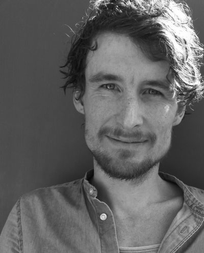

After graduating from the Academy of Media Arts Cologne in 2010, I have been working as a freelance motion designer, VFX artist, and sound designer for TV broadcasts, cinema, advertising, exhibitions, presentations, and many other projects. I am currently based in Cologne.

Feel free to contact me:
Arne Münch
Heinrich-Bürgers-Str.2-4
50827 Köln
Mobile: +49 178 1448296
USt-IdNr.:DE297699560
email contact